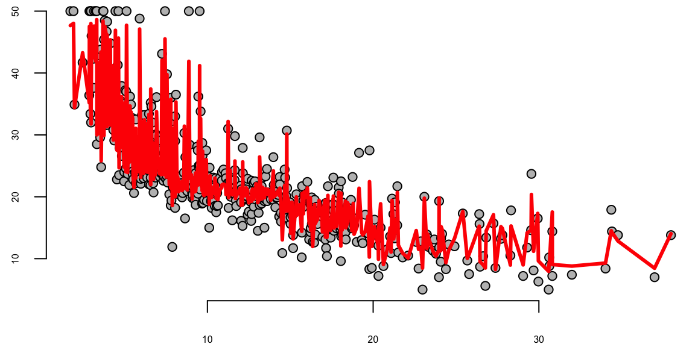

We’ve used decision trees before to describe the decision-making process as a sequence of actions and conditions. In this section, we’ll use decision trees to make predictions. You can think of a prediction as a decision task, where you need to decide which value of \(y\) to use for a given \(x\). Similar to a decision tree, a predictive tree model is a nested sequence of if-else statements that map any input data point \(x\) to a predicted output \(y\). Each if-else statement checks a feature of \(x\) and sends the data left or right along the tree branch. At the end of the branch, a single value of \(y\) is predicted.
Figure 14.1 shows a decision tree for predicting a chess piece given a four-dimensional input vector that describes the types of moves available to the piece. The tree is a sequence of nested if-else statements that check the values of the input vector. The tree has six leaves, one for each of the chess pieces and has a depth of four. The tree is a predictive model that maps a four-dimensional input vector to a single output categorical value with six possible values.
Figure 14.1: Elementary tree scheme; visualization of the splitting process
The prediction algorithm is simple. Start at the root node and move down the tree until you reach a leaf node. The process of building a tree, given a set of training data, is more complicated and has three main components:
Splitting. The process of dividing the training data into subsets based on the value of a single feature. The goal is to create subsets that are as homogeneous as possible. The subsets are then used to create the nodes of the tree.
Stopping. The process of deciding when to stop splitting. The goal is to create a tree that is as accurate as possible without overfitting the training data.
Pruning. The process of removing nodes from the tree that do not improve the accuracy of the tree. The goal is to create a tree that is as accurate as possible without overfitting the training data.
The splitting process is the most important part of the tree-building process. At each step the splitting process needs to decide on the feature index \(j\) to be used for splitting and the location of the split. For a binary variable there is only one possible split location, but for continuous variables there are many possible split locations. The goal is to find the split that creates the most homogeneous subsets. In the case of regression trees, the best split is the one that minimizes the sum of squared errors. In the case of classification trees, the best split is the one that minimizes the Gini impurity. The Gini impurity is a measure of how homogeneous the subsets are.
Imagine you’re a jewelry appraiser tasked with determining a diamond’s value. You might follow a series of questions: Is the carat weight above 1.0? If yes, is the clarity VS1 or better? Each question leads to another, creating a decision path that eventually arrives at a price estimate. This is precisely how decision trees work—they mirror our natural decision-making process by creating a flowchart of if-then rules.
Below we’ll explore tree-based models using the classic diamonds dataset, which contains prices and attributes for 53,940 diamonds. We’ll start with simple decision trees, progress to ensemble methods like random forests and gradient boosting, and develop deep insights into how these algorithms work, when to use them, and how to avoid common pitfalls.
Let’s start with a quick demo and look at the data, which has 10 variables
Variable
Description
Values
carat
Weight of the diamond
Numeric
cut
Quality of the cut
Fair, Good, Very Good, Premium, Ideal
color
Color of the diamond
J, I, H, G, F, E, D
clarity
Clarity of the diamond
I1, SI2, SI1, VS2, VS1, VVS2, VVS1, IF
depth
Depth of the diamond
Numeric
table
Width of the diamond’s table
Numeric
library(ggplot2)data(diamonds)head(diamonds)
carat
cut
color
clarity
depth
table
price
x
y
z
0.23
Ideal
E
SI2
62
55
326
4.0
4.0
2.4
0.21
Premium
E
SI1
60
61
326
3.9
3.8
2.3
0.23
Good
E
VS1
57
65
327
4.0
4.1
2.3
0.29
Premium
I
VS2
62
58
334
4.2
4.2
2.6
0.31
Good
J
SI2
63
58
335
4.3
4.3
2.8
0.24
Very Good
J
VVS2
63
57
336
3.9
4.0
2.5
Let’s plot price vs carat.
ggplot(diamonds, aes(x = carat, y = price, color = clarity)) +geom_point()
Notice the strong non-linear relationship between carat and price. This suggests that log-transformations might help make the relationship linear.
# Create log-transformed price for better linear relationshipsdiamonds <- diamonds %>%mutate(log_price =log(price),log_carat =log(carat))# Examine the linearized relationshipggplot(diamonds, aes(x = log_carat, y = log_price)) +geom_point(alpha =0.05, color ="darkblue") +geom_smooth(method ="lm", color ="red") +labs(title ="Log-transformed Price vs Carat Shows Linear Relationship",x ="Log(Carat)", y ="Log(Price)")
However, as we will see later tree models are not very sensitive to the linearity of the relationship between the predictors and the response. In general, we do not need to transform the variables.
Although carat is the most important factor in determining the price of a diamond, it is not the only factor. We can see that there is a lot of variability in the price of diamonds with the same carat.
# use density plot to compare price for different clarity levelsggplot(diamonds, aes(x = price, color = clarity)) +geom_density()
Let’s start with a simple decision tree using just two predictors to visualize how trees partition the feature space:
library(rpart)library(rpart.plot)tree_model <-rpart(price ~ carat + clarity, data = diamonds)rpart.plot(tree_model)
The decision tree plot shows how the algorithm partitions the feature space based on carat and clarity to predict diamond prices. The tree structure reveals several interesting patterns:
Primary split on carat: The tree first splits on carat at 1.05, indicating this is the most important predictor for price. This makes intuitive sense since carat weight is typically the strongest determinant of diamond value.
Secondary splits on clarity: After the carat split, the tree further partitions based on clarity levels. This shows that while carat is primary, clarity still provides important predictive value for price.
Interpretability: Each terminal node (leaf) shows the predicted price for that region. For example, diamonds with carat < 1.05 and clarity in the lower categories (I1, SI2, SI1) have an average predicted price of $2,847.
Feature interactions: The tree reveals how carat and clarity interact - the effect of clarity on price depends on the carat weight, which is captured through the hierarchical splitting structure.
This simple two-predictor tree demonstrates the key advantages of decision trees: they can handle non-linear relationships, provide interpretable rules, and naturally capture feature interactions without requiring explicit specification of interaction terms.
We can see that for small and large diamonds, the price is consistently low and does not depend much on the clarity. However, at around 1 carat, we see some overlap in the price for different clarity levels. Clarity becomes important at this level
Now let’s plot the data with the tree regions.
# PLot the rectangle areas that represent the regions of the treepred_data <-expand.grid(carat =seq(min(diamonds$carat), max(diamonds$carat), length.out =50),clarity = diamonds$clarity)pred_data$pred_price <-predict(tree_model, pred_data)# Plot regionsggplot(pred_data, aes(x = carat, y = clarity, fill = pred_price)) +geom_tile() +scale_fill_gradient(low ="blue", high ="red") +labs(title ="Tree Regions: Carat vs Clarity")
The plot above shows the decision tree’s prediction regions as colored tiles, where each tile represents a specific combination of carat and clarity values. The color gradient from blue to red indicates the predicted price, with darker red representing higher predicted prices.
Looking at this visualization, we can see several key patterns. The strongest predictor is clearly carat, as evidenced by the vertical bands of similar colors. As carat increases (moving right on the x-axis), the predicted prices generally increase (colors shift from blue to red). The tree captures non-linear patterns that a simple linear model would miss. For example, the rate of price increase with carat is not uniform across all clarity levels. Unlike smooth regression surfaces, the tree creates distinct rectangular regions with sharp boundaries, reflecting the binary splitting nature of decision trees.
The prediction is rather straightforward. The tree divides the predictor space-that is, the set of possible values for \(x_1, x_2, \ldots, x_p\) - into \(J\) distinct and non-overlapping boxes, \(R_1,R_2,...,R_J\). For every observation that falls into the region \(R_j\), we make the same prediction, which is simply the mean of the response values for the training observations in \(R_j\).
\[
f(x) = \bar y_j, \text{ for } x \in R_j, \text{ where } \bar y_j = \text{Average}(y_i \mid x_i \in R_j)
\]
14.1 Building a Tree via Recursive Binary Splitting
The overall goal of building a tree is to find regions that lead to minima of the total Residual Sum of Squares (RSS) \[
\mathrm{RSS} = \sum_{j=1}^J\sum_{i \in R_j}(y_i - \bar{y}_j)^2 \rightarrow \mathrm{minimize}
\]
Unfortunately, it is computationally infeasible (NP-hard problem) to consider every possible partition of the feature space into \(J\) boxes. We can find a good approximate solution, using top-down approach (the CART algorithm).
It begins with the entire dataset at the “root” node and repeatedly splits the data into two “child” nodes. This process continues recursively on each new node, with the goal of making the resulting groups (nodes) as homogeneous as possible with respect to the target variable, price. At each iteration we decide on which variable \(j\) to split and the split point \(s\). \[
R_1(j, s) = \{x\mid x_j < s\} \mbox{ and } R_2(j, s) = \{x\mid x_j \ge s\},
\] thus, we seek to minimize (in case of regression tree) \[
\min_{j,s}\left[ \sum_{i:x_i\in R_1}(y_i - \bar{y}_1)^2 + \sum_{i:x_i \in R_2}(y_i - \bar{y}_2)^2\right]
\] As a result, every observed input point belongs to a single region.
14.2 Pruning: Taming an Overfit Tree
Now let’s discuss how many regions we should have. At one extreme end, we can have \(n\) regions, one for each observation. Then the tree model will work similar to the one-nearest neighbor model. At the other end, we can have one big region for the entire input space and then every prediction will be the same (average across observed \(y\)’s). Both models can be used but usually the best one is in the middle. The number of regions (branches) controls the complexity of the model. We need to find a good size on the variance-bias scale. A smaller tree with fewer splits (that is, fewer regions \(R_1,...,R_J\)) might lead to lower variance and better interpretation at the cost of a little bias.
How do we construct a tree with a “manageable” number of branches? This is accomplished through the steps of forward tree construction and backward pruning. The forward step is a greedy algorithm that begins with a single region and divides it into two. This procedure is repeated until a certain stopping criterion is met. A practical method is to continue building the tree until the Residual Sum of Squares (RSS) plateaus. However, this method can be myopic as an initially unproductive split might be followed by a highly beneficial one, leading to a significant decrease in RSS in subsequent iterations. A more effective strategy is to grow an extensive tree \(T_0\), and then trim it down to obtain a subtree. The size of the subtree can be determined using cross-validation. However, be aware that the number of subtrees can be exponential!
Instead of considering all possible sub-trees, we will do cost complexity pruning - also known as weakest link pruning. We consider a sequence of trees indexed by a nonnegative tuning parameter \(\alpha\). For each value of \(\alpha\) there corresponds a subtree \(T \subset T_0\) such that minimizes \[
\sum_{m=1}^{|T|}\sum_{i:x_i\in R_m}(y_i - \bar{y}_m)^2 + \alpha |T|
\] The parameter \(\alpha\) balances the complexity of the subtree and its adherence to the training data. When we increment \(\alpha\) starting from zero, branches are predictably and sequentially pruned from the tree, making it straightforward to acquire the entire series of subtrees as a function of \(\alpha\). We determine the optimal value \(\hat \alpha\) through cross-validation. Afterward, we refer back to the complete data set and extract the subtree that corresponds to \(\hat \alpha\).
14.3 Classification Trees
A classification tree operates much like a regression tree. The prediction is made based on the “majority vote”, which means selecting the class that appears most frequently within the region. The process of developing a classification tree is largely the same as that of a regression tree, involving recursive binary splitting. However, instead of using the Residual Sum of Squares (RSS), we use the classification error rate, which is the proportion of observations in that region that do not belong to the most prevalent class.
We start by introducing some notations \[
p_{mk} = \dfrac{1}{N_m}\sum_{x_i \in R_m} I(y_i=k),
\] which is proportion of observations of class \(k\) in region \(m\).
The classification then done as follows \[
p_m = \max_k p_{mk},~~~ E_m = 1-p_m
\] i.e the most frequent observation in region \(m\)
Then classification is done as follows \[
P(y=k) = \sum_{j=1}^J p_j I(x \in R_j)
\]
An alternative method to evaluate the quality of a split in a classification tree is through the use of the Gini Index or Cross-Entropy. Let’s consider a scenario where we have an equal number of observations in each class, say 400 in each.
Now, suppose we create a tree that results in two regions: one with a distribution of (300,100) and the other with (100,300). This means that in the first region, 300 observations belong to one class and 100 to the other, and vice versa in the second region.
Consider another scenario where we have a different tree that results in two regions with distributions of (200,400) and (200,0).
In both cases, the misclassification rate is 0.25, meaning that 25% of the observations are incorrectly classified. However, the second tree is more desirable. Why is that? The second tree has a region with no misclassifications at all (200,0), which means it is perfectly classifying all observations in that region. This is an ideal situation in classification problems. On the other hand, the first tree, despite having the same overall misclassification rate, does not have any region where all observations are correctly classified.
This illustrates that while the misclassification rate is a useful metric, it does not always capture the full picture. Other metrics like the Gini Index or Cross-Entropy can provide a more nuanced view of the quality of a split, taking into account not just the overall error rate, but also the distribution of errors across different regions.
Another way to measure the quality of the split is to use the Gini Index and Cross-Entropy Say, I have 400 observations in each class (400,400). I create a tree with two regions: (300,100) and (100,300). Say I have another tree: (200,400) and (200,0). In both cases misclassification rate is 0.25. The latter tree is preferable. We prefer to have more “pure nodes” and Gini index does a better job.
The Gini index: \[
G_m = \sum_{k=1}^K p_{mk}(1-p_{mk})
\] It measures a variance across the \(K\) classes. It takes on a small value if all of the \(p_{mk}\)’s are close to zero or one.
An alternative to the Gini index is cross-entropy (a.k.a deviance), given by \[
D_m = -\sum_{k=1}^Kp_{mk}\log p_{mk}
\] It is near zero if the \(p_mk\)’s are all near zero or near one. Gini index and the cross-entropy led to similar results.
Now we apply the tree model to the Boston housing dataset.
plot(boston.tree,type="u")# plot tree and partition in x.text(boston.tree,col="blue",label=c("yval"),cex=.8)partition.tree(boston.tree)
Get predictions on 2d grid
pv=seq(from=.01,to=.99,by=.05)x1q =quantile(df2$lstat,probs=pv)x2q =quantile(df2$dis,probs=pv)xx =expand.grid(x1q,x2q) #matrix with two columns using all combinations of x1q and x2qdfpred =data.frame(dis=xx[,2],lstat=xx[,1])lmedpred =predict(boston.tree,dfpred)
Advantages of Decision Trees: Decision trees are incredibly intuitive and simple to explain, often even more straightforward to understand than linear regression models. Some theorists argue that decision trees mimic human decision-making processes more accurately than other regression and classification methods we’ve discussed in previous chapters. Decision trees can be visually represented, making them easily interpretable, even for those without a deep understanding of the underlying mechanics, particularly when the trees are not overly complex. Additionally, decision trees can effortlessly manage qualitative predictors, eliminating the need to create dummy variables.
Disadvantages of Decision Trees: Large trees can exhibit high variance, meaning that a minor change in the data can lead to a significant change in the final estimated tree, making the model unstable. Conversely, small trees, while more stable, may not be powerful predictors as they might oversimplify the problem. It can be challenging to find a balance between bias and variance when using decision trees. A model with too much bias oversimplifies the problem and performs poorly, while a model with too much variance overfits the data and may not generalize well to unseen data.
There are several techniques used to address the issue of overfitting in decision trees. We considered the pruning technique which reduces the complexity of the final classifier, and hence improve predictive accuracy by reducing overfitting. Two other methods are random forests and boosting. Random Forests is an ensemble method where multiple decision trees are created and their predictions are averaged (for regression) or majority voting is done (for classification). Boosting is another ensemble technique where trees are built sequentially such that each subsequent tree aims to reduce the bias of the combined classifier.
In the bagging approach, we treat the sample as if it were the population and then take iid draws. That is, you sample with replacement so that you can get the same original sample value more than once in a bootstrap sample.
To Bootsrap Aggregate (Bag) we:
Take \(B\) bootstrap samples from the training data, each of the same size as the training data.
Fit a large tree to each bootstrap sample (we know how to do this fast!). This will give us \(B\) trees.
Combine the results from each of the B trees to get an overall prediction.
When the target variable \(y\) is numeric, the bagging process is straightforward. The final prediction is simply the average of the predictions from each of the \(B\) trees. However, when \(y\) is categorical, the process of combining results from different trees is less straightforward. One common approach is to use a voting system. In this system, each tree in the ensemble makes a prediction for a given input \(x\). The predicted category that receives the most votes (out of \(B\) total votes) is chosen as the final prediction. Another approach is to average the predicted probabilities \(\hat p\) from each tree. This method can provide a more nuanced prediction, especially in cases where the voting results are close.
Despite the potential benefits of averaging predicted probabilities, most software implementations of bagging for decision trees use the voting method. This is likely due to its simplicity and intuitive appeal. However, the best method to use can depend on the specific characteristics of the problem at hand.
The simple idea behind every ensemble method is that the variance of the average is lower than the variance of individual models. Say we have \(B\) models \(f_1(x),\ldots,f_B(x)\) then we combine those \[
f_{avg}(x) = \dfrac{1}{B}\sum_{b=1}^Bf_b(x)
\] Combining models helps fight overfitting. On the negative side, it is harder to interpret these ensembles
Let’s experiment with the number of trees in the model
With 1,000 and 5,000 trees the fit is not bad and very similar.
Note that although our method is based multiple trees (average over) so we no longer have a simple step function!!
14.4 Random Forest
In the bagging technique, models can become correlated, which prevents the achievement of a \(1/n\) reduction in variance. This happens because most, if not all, of the trees will use the most influential predictor in the top split. As a result, bagged trees tend to look very similar to each other.
Random Forests, on the other hand, introduce an element of randomness that helps to decorrelate the trees, making the ensemble more robust and improving prediction accuracy. This randomness comes into play when considering a split in a tree. Instead of considering all \(p\) predictors for a split, a random sample of \(m\) predictors is chosen as split candidates. This subset of predictors is different for each split, which means that different trees are likely to use different predictors in the top split, leading to a more diverse set of trees.
The number of predictors considered at each split, \(m\), is typically chosen to be the square root of the total number of predictors, \(p\). This choice is a rule of thumb that often works well in practice, but it can be tuned based on the specific characteristics of the dataset.
By decorrelating the trees, Random Forests can often achieve better performance than bagging, especially when there’s a small number of very strong predictors in the dataset. In such cases, bagging can end up with an ensemble of very similar trees that all rely heavily on these strong predictors, while Random Forests can leverage the other, weaker predictors more effectively.
One of the “interpretation” tools that comes with ensemble models is importance ranking: the total amount that the deviance (loss) is decreased due to splits over a given predictor, averaged over all trees
rf.boston =randomForest(medv~.,data=Boston,mtry=6,ntree=50, maxnodes=50)yhat.rf =predict(rf.boston,newdata=Boston)oo=order(Boston$lstat)plot(Boston$lstat[oo],Boston$medv[oo],pch=21,bg="grey", xlab="lstat", ylab="medv") #plot datalines(Boston$lstat[oo],yhat.rf[oo],col='red',lwd=3) #step function fit

14.5 Boosting
Boosting, like Random Forests, is a method that combines multiple trees to create a more powerful predictive model. However, the approach it takes is quite distinct.
Here’s how Boosting works:
Initially, a single decision tree is fitted to the data.
This initial tree is intentionally made weak, meaning it doesn’t perfectly fit the data.
We then examine the residuals, which represent the portion of the target variable \(y\) not explained by the weak tree.
A new tree is then fitted to these residuals, essentially trying to predict the error of the first tree.
This new tree is also “weakened” or “shrunk”. The prediction from this tree is then added to the prediction of the first tree.
This process is repeated iteratively. In each iteration, a new tree is fitted to the residuals of the current ensemble of trees, shrunk, and then added to the ensemble.
The final model is the sum of all these “shrunk” trees. The key idea behind Boosting is to iteratively improve the model by focusing on the parts of the data that the current model is not explaining well (the residuals). Each new tree is trying to correct the mistakes of the ensemble of previous trees. By adding together many weak models (the shrunk trees), Boosting can often achieve a strong overall model.
Pick a loss function \(\mathcal{L}\) that reflects setting; e.g., for continuous \(y\), could take \(\mathcal{L}(y_i , \theta_i ) = (y_i - \theta_i )^2\) Want to solve \[\mathrm{minimize}_{\beta \in R^M} \sum_{i=1}^n \mathcal{L} \left(y_i, \sum_{j=1}^M \beta_j \cdot T_j(x_i)\right)\]
Indexes all trees of a fixed size (e.g., depth = 5), so \(M\) is huge
Space is simply too big to optimize
Gradient boosting: basically a version of gradient descent that is forced to work with trees
First think of optimization as \(\min_\theta f (\theta)\), over predicted values \(\theta\) (subject to \(\theta\) coming from trees)
Set \(f_1(x)=0\) (constant predictor) and \(r_i=y_i\)
For \(b=1,2,\ldots,B\)
Fit a tree \(f_b\) with \(d\) splits to the training set \((X,r)\)
Update the model \[f(x) = f(x) +\lambda f_b(x)\]
Update the residuals \[r_i=r_i - \lambda f_b(x)\]
Here are some boosting fits where we vary the number of trees, but fix the depth at 2 (suitable with 1 x) and shrinkage = \(\lambda\) at .2.
Advantages of Boosting over Random Forests include performance and model interpretability. Boosting, in many cases, provides better predictive accuracy than Random Forests. By focusing on the residuals or mistakes, Boosting can incrementally improve model performance. While both methods are not as interpretable as a single decision tree, Boosting models can sometimes be more interpretable than Random Forests, especially when the number of weak learners (trees) is small.
Disadvantages of Boosting compared to Random Forests include computational complexity, overfitting potential, and sensitivity to outliers and noise. Boosting can be more computationally intensive than Random Forests because trees are built sequentially in Boosting, while in Random Forests they are built independently and can be parallelized. Boosting can overfit the training data if the number of trees is too large or if the trees are too complex. This is less of a problem with Random Forests, which are less prone to overfitting due to the randomness injected into the tree building process. Boosting can also be sensitive to outliers since it tries to correct the mistakes of the predecessors, while Random Forests are more robust to outliers. Finally, Boosting can overemphasize instances that are hard to classify and can overfit to noise, whereas Random Forests are more robust to noise.
Remember, the choice between Boosting and Random Forests (or any other model) should be guided by the specific requirements of your task, including the nature of your data, the computational resources available, and the trade-off between interpretability and predictive accuracy.
14.6 Finding Good Bayes Predictors
The ensemble methods we’ve discussed—bagging, random forests, and boosting—all share a common goal: improving predictive performance by combining multiple weak learners. But what is the theoretical foundation for why these methods work so well? And how do we determine the optimal way to combine these predictors? These questions lead us naturally to a Bayesian perspective on prediction, which provides both theoretical justification and practical guidance for ensemble methods.
Bayesian methods tackle the problem of good predictive performance in a number of ways. The goal is to find a good predictive MSE \(E_{Y,\hat{Y}}(\Vert\hat{Y} - Y \Vert^2)\). First, Stein shrinkage (a.k.a regularization with an \(\ell_2\) norm) has long been known to provide good mean squared error properties in estimation, namely \(E(||\hat{\theta} - \theta||^2)\) as well. These gains translate into predictive performance (in an iid setting) for \(E(||\hat{Y}-Y||^2)\). One of the main issues is how to tune the amount of regularisation (a.k.a prior hyper-parameters). Stein’s unbiased estimator of risk provides a simple empirical rule to address this problem, as does cross-validation. From a Bayes perspective, the marginal likelihood (and full marginal posterior) provides a natural method for hyper-parameter tuning. The issue is computational tractability and scalability. The posterior for \((W,b)\) is extremely high dimensional and multimodal and posterior MAP provides good predictors \(\hat{Y}(X)\).
Bayes conditional averaging can also perform well in high dimensional regression and classification problems. High dimensionality brings with it the curse of dimensionality and it is instructive to understand why certain kernel can perform badly.
Adaptive Kernel predictors (a.k.a. smart conditional averager) are of the form
Here \(\hat{Y}_r(X)\) is a deep predictor with its own trained parameters. For tree models, the kernel \(K_r( X_i , X)\) is a cylindrical region \(R_r\) (open box set). Figure 14.2 illustrates the implied kernels for trees (cylindrical sets) and random forests. Not many points will be neighbors in high-dimensional input space.
Figure 14.2: Cylindrical kernels for trees (left) and random forests (right).
Constructing the regions is fundamental to reducing the curse of dimensionality. It is useful to imagine a very large dataset, e.g., 100k images, and think about how a new image’s input coordinates, \(X\), are “neighbors” to data points in the training set. Our predictor will then be a smart conditional average of the observed outputs, \(Y\), for our neighbors. When \(p\) is large, spheres (\(L^2\) balls or Gaussian kernels) are terrible: either no points or all points are “neighbors” of the new input variable. Trees are good as not too many “neighbors”.
To illustrate the problem further, Figure 14.3 below shows the 2D image of 1000 uniform samples from a 50-dimensional ball \(B_{50}\). The image is calculated as \(w^T Y\), where \(w = (1,1,0,\ldots,0)\) and \(Y \sim U(B_{50})\). Samples are centered around the equators and none of the samples fall close to the boundary of the set.
Figure 14.3
As dimensionality of the space grows, the variance of the marginal distribution goes to zero. We can empirically see it from Figure 14.4, which shows histogram of 1D image of uniform sample from balls of different dimensionality, i.e. \(e_1^T Y\), where \(e_1 = (1,0,\ldots,0)\).
Figure 14.4: Histogram of marginal distribution of \(Y\sim U(B_p)\) for different dimensions \(p\).
Similar central limit results were known to Maxwell who showed that random variable \(w^TY\) is close to standard normal, when \(Y \sim U(B_p)\), \(p\) is large, and \(w\) is a unit vector (lies on the boundary of the ball). For the history of this fact, see Diaconis and Freedman (1987). More general results in this direction were obtained in Klartag (2007). Further, Milman and Schechtman (2009) presents many analytical and geometrical results for finite dimensional normed spaces, as the dimension grows to infinity.
Deep learning improves on this by performing a sequence of GLM-like transformations; effectively, DL learns a distributed partition of the input space. Specifically, suppose that we have \(K\) partitions. Then the DL predictor takes the form of a weighted average, or in the case of classification, a soft-max of the weighted average of observations in this partition. Given a new high-dimensional input \(X_{\mathrm{new}}\), many deep learners are an average of learners obtained by our hyperplane decomposition. Generically, we have
\[
\hat{Y}(X) = \sum_{k \in K} w_k(X)\hat{Y}_k(X),
\] where \(w_k\) are the weights learned in region \(k\), and \(w_k(X)\) is an indicator of the region with appropriate weighting given the training data. The weight \(w_k\) also indicates which partition the new \(X_{\mathrm{new}}\) lies in.
The use of pooling (a.k.a. averaging) of multiple predictors is commonplace in machine learning. Ensemble methods (a.k.a. some form of clever conditional averaging) are prevalent in high dimensions. One reason for these procedures is that it is relatively easy to find unbiased predictors, with the caveat that they have large variances due to dimensionality. The following result on exchangeability (Kingman, 1975) shows that we can simply use the \(1/N\)-rule and average to reduce risk. Specifically, suppose that we have \(K\) exchangeable, \(\mathbb{E} ( \hat{Y}_i ) = \mathbb{E} ( \hat{Y}_{\pi(i)} )\), predictors
Find \(w\) to attain \(\operatorname{argmin}_W E l( Y , w^T \hat{Y} )\) where \(l\) convex in the second argument;
\[
E l( Y , w^T \hat{Y} ) = \frac{1}{K!} \sum_\pi E l( Y , w^T \hat{Y} ) \geq E l \left ( Y , \frac{1}{K!} \sum_\pi w_\pi^T \hat{Y} )\right ) = E l \left ( Y , (1/K) \iota^T \hat{Y} \right )
\]
where \(\iota = ( 1 , \ldots ,1 )\). Hence, the randomized multiple predictor with weights \(w = (1/K)\iota\) provides close to optimal Bayes predictive performance. We now turn to algorithmic issues.
An alternative approach is to perform Bayesian model selection. Here we calculate the optimal Bayes weight for each predictor in accordance with Bayes Rule. We formalize the gains in Classification Risk with the following discussion.
14.7 Ensemble Averaging and \(1/N\) Rule
In high dimensions, when we have a large number of predictive models that generate uncorrelated predictions, the optimal approach to generate a prediction is to average predictions from those individual models/weak predictors. This is called the \(1/N\) rule. The variance in the prediction is reduced by a factor of \(N\) when we average out \(N\) uncorrelated predictions. \[
\mbox{Var} \left ( \frac{1}{N} \sum_{i=1}^N \hat y_i \right ) = \frac{1}{N^2} \mbox{Var} \left ( \hat y_i \right ) + \frac{2}{N^2} \sum_{i \neq j} \mbox{Cov} \left ( \hat y_i, \hat y_j \right )
\] In high dimensions it is relatively easy to find uncorrelated predictors, and these techniques prove to lead to winning solutions in many machine learning competitions. The \(1/N\) rule is optimal due to exchangeability of the weak predictors, see Polson, Sokolov, et al. (2017)
Classification variance decomposition
The famous result is due to Cover and Hart (1967) who proved that k-nearest neighbors are at most twice the bayes risk.
Amit, Blanchard, and Wilder (2000) use the population conditional probability distribution of a point \(X\) given \(Y=c\), denoted by \(P_{c}\), and the associated conditional expectation and variance operators will be denoted \(E_{c}\) and \(V a r_{c}\). Define the vectors of average aggregates conditional on class \(c\) as \[
M_{c}(d)=E_{c}\left[H_{\mathbf{Q}}(X, d)\right]=E\left[H_{\mathbf{Q}}(X, d) \mid Y=c\right]
\]
for \(d=1, \ldots, K\). The average conditional margin (ACM) for class \(c\) is defined as
We assume that \(\theta_{c}>0\). This assumption is very weak since it involves only the average over the population of class \(c\). It is quite natural since one would not expect good classification results when it is violated. Indeed as shown below it is satisfied in all cases.
Given that \(\theta_{c}>0\), the error rate for class \(c\) depends on the extent to which the aggregate classifier \(H_{\mathbf{Q}}(X, d)\) is concentrated around \(M_{c}(d)\) for each \(d=1, \ldots, K\). The simplest measure of concentration is the variance of \(H_{\mathbf{Q}}(X, d)\) with respect to the distribution \(P_{c}\). Using Chebyshev’s inequality we write a coarse bound on the misclassification probability with respect to \(P_{c}\) as follows.
Of course Chebyshev’s inequality is coarse and will not give very sharp results in itself, be we state it here as a landmark pointing to the relative importance of margin and variance, and to the tradeoff between the two quantities.
We rewrite each of the variance terms of the last equation as
where the notation \(E_{\mathbf{Q} \otimes \mathbf{Q}}\) means that \(h_{1}, h_{2}\) are two classifiers sampled independently from the distribution \(\mathbf{Q}\). We can therefore interpret this variance term as the conditional covariance of two classifiers independently sampled from \(\mathbf{Q}\). We call this quantity the average conditional covariance (ACC). Even if \(\mathbf{Q}\) is a discrete distribution, such as that provided by a particular run of \(N\) classifiers, when it is supported on a moderate number of classifiers, it is dominated by the conditional covariances of which there are order \(N^{2}\), and not the conditional variances of which there are order \(N\).
Conditional and unconditional dependence
It should be emphasized that two classifiers, provided that they achieve reasonable classification rate (that is, better than just picking a class at random) will not be unconditionally independent. If we do not know the class label of a point, and vector \(\left(h_{1}(X, i)\right)_{i}\) is large at class \(c\), then we actually change our expectations regarding \(\left(h_{2}(X, i)\right)_{i}\). On the other hand if we were given in advance the class label \(Y\), then knowing \(h_{1}(X)\) would hardly affect our guess about \(h_{2}(X)\). This is the motivation behind the notion of weak conditional dependence.
This is in contrast to the measure of dependence introduced in Dietterich (1998), which involves the unconditional covariance. The \(\kappa\) statistic used there is
\[
\kappa\left(h_{1}, h_{2}\right)=\frac{\sum_{d} \operatorname{Cov}\left[h_{1}(X, d), h_{2}(X, d)\right]}{1-\sum_{d} E h_{1}(X, d) E h_{2}(X, d)},
\]
A simple decomposition of the numerator yields: \(\operatorname{Cov}\left[h_{1}(X, d), h_{2}(X, d)\right]=E \operatorname{Cov}\left[h_{1}(X, d), h_{2}(X, d) \mid Y\right]+\operatorname{Cov}\left[E\left[h_{1}(X, d) \mid Y\right], E\left[h_{2}(X, d) \mid Y\right]\right]\).
Cover, T., and P. Hart. 1967. “Nearest Neighbor Pattern Classification.”IEEE Transactions on Information Theory 13 (1): 21–27.
Diaconis, Persi, and David Freedman. 1987. “A Dozen de Finetti-style Results in Search of a Theory.” In Annales de l’IHP Probabilités Et Statistiques, 23:397–423.
Klartag, Bo’az. 2007. “A Central Limit Theorem for Convex Sets.”Inventiones Mathematicae 168 (1): 91–131.
Milman, Vitali D, and Gideon Schechtman. 2009. Asymptotic Theory of Finite Dimensional Normed Spaces: Isoperimetric Inequalities in Riemannian Manifolds. Vol. 1200. Springer.
Polson, Nicholas G, Vadim Sokolov, et al. 2017. “Deep Learning: A Bayesian Perspective.”Bayesian Analysis 12 (4): 1275–1304.